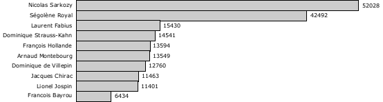
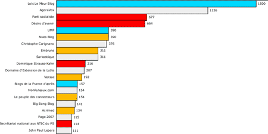

La longue traîne politique 2
J’aime bien les images en ce moment. Suite au billet de ludovic, je viens de classer les personnalités politiques en fonction du buzz sur les blogs d'après les mesures bonVote.com. On a une longue traîne, voir le classement complet.

Après, j’ai voulu vérifier si le classement des blogs politiques de bonVote.com dessinait aussi une longue traîne. Bingo !

La note correspond à l’indice de popularité, les couleurs à l'appartenance politique. Ici, la longue traîne avec les 100 premiers blogs. Pour la correspondance des couleurs, voir ici.
Suite | 2006 | Sommaire | Texte publié mercredi 20 décembre 2006